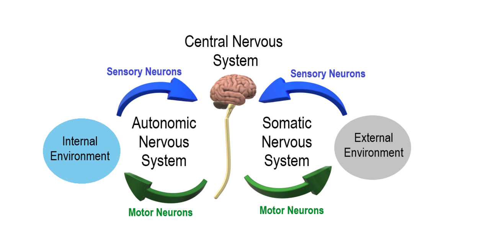

💪 Sức khỏe Nam giới
Relationship — Couple CommunicationDeep dive⏱ 8 phút đọc
Nghệ Thuật Giao Tiếp Cặp Đôi: Giải Mã Tỷ Lệ Vàng 5:1 & Cơ Chế An Toàn Sinh Học Thần Kinh
Sau hơn 40 năm theo dõi các cặp đôi tại 'Love Lab' của Đại học Washington, Giáo sư John Gottman có thể dự đoán chính xác tới 94% khả năng ly hôn chỉ bằng cách quan sát 15 phút trò chuyện. Chìa khóa không nằm ở việc 'không bao giờ cãi nhau', mà nằm ở tỷ lệ cân bằng giữa các tương tác tích cực và tiêu cực cùng khả năng điều hòa hệ thần kinh tự chủ giữa hai người.
Nguồn nghiên cứu & Thiết bị: Journal of Marriage and Family (Gottman Institute) & Frontiers in Psychology•Màn hình App: Relationship & Stress Screen•Chỉ số: Autonomic Safety, Polyvagal Tone & Gottman 5:1 Ratio
💡Điểm Cốt Lõi & Hành Động Thực Tế
Trong một mối quan hệ bền vững, cần tối thiểu 5 tương tác tích cực (lắng nghe, khen ngợi, chạm nhẹ, đùa vui) để hóa giải 1 tương tác tiêu cực (chỉ trích, phòng thủ). Khi nhịp tim của một trong hai người vượt quá 100 bpm trong lúc tranh cãi, não bộ rơi vào trạng thái tê liệt cảm xúc—hãy tạm dừng 20 phút trước khi tiếp tục.
"Phòng Thí Nghiệm Tình Yêu" (Love Lab) & Tỷ Lệ Vàng 5:1
Tại Viện Nghiên cứu Gottman (Seattle), các nhà tâm lý học đã gắn cảm biến nhịp tim, điện não đồ và camera phân tích cơ mặt micro-expressions lên hàng nghìn cặp đôi khi họ thảo luận về những bất đồng dai dẳng. Phát hiện mang tính cách mạng của John Gottman & Robert Levenson (Journal of Marriage and Family) là:
- Ở những cặp đôi hạnh phúc và gắn bó lâu dài: Tỷ lệ giữa các tương tác tích cực so với tương tác tiêu cực trong lúc xung đột luôn duy trì ở mức tối thiểu 5 : 1 (5 lời khen ngợi, gật đầu, ánh mắt thấu cảm hoặc nụ cười xoa dịu cho mỗi 1 lời phê bình hoặc bất đồng).
- Trong những khoảnh khắc đời thường không có tranh cãi, tỷ lệ này thậm chí đạt tới 20 : 1.
- Ngược lại, ở những cặp đôi tiến dần đến bờ vực tan vỡ: Tỷ lệ này tụt xuống mức 0.8 : 1—nghĩa là số lượng lời chỉ trích, miệt thị nhiều hơn cả những cử chỉ yêu thương.

📊 Hiện Tượng Ngập Lụt Cảm Xúc (Flooding): Khi nhịp tim vượt ngưỡng 100 bpm, vỏ não trước trán bị phong tỏa, nhường quyền kiểm soát cho phản ứng chiến đấu của hạch hạnh nhân. Nguồn sơ đồ: Wikimedia Commons ↗
Thuyết Đa Dây Thần Kinh Phế Vị (Polyvagal Theory) & "Sự An Toàn Thần Kinh"
Tại sao một câu nói mỉa mai của đối tác lại khiến bạn cảm thấy nhói đau như một cú đấm vật lý? Theo Tiến sĩ Stephen Porges (Polyvagal Theory), não người sở hữu một hệ thống giám sát vô thức gọi là Neuroception (Cảm nhận thần kinh):
1. Nhánh Phế Vị Mặt Bụng (Ventral Vagal Complex): Khi nhận thấy giọng nói trầm ấm, ánh mắt cởi mở và nụ cười của người bạn đời, nhánh thần kinh này được kích hoạt. Bạn cảm thấy an toàn, nhịp tim chậm lại, các cơ tai trong căng ra để lắng nghe ngôn ngữ tốt hơn.
2. Kích Hoạt Giao Cảm (Sympathetic Fight-or-Flight): Nếu đối phương trợn mắt, khoanh tay hoặc sử dụng tông giọng chỉ trích gắt gỏng, Neuroception lập tức phát tín hiệu nguy hiểm. Bạn rơi vào trạng thái chiến đấu (phản bác gay gắt) hoặc đóng băng (im lặng né tránh).
Một cuộc trò chuyện chỉ có thể đạt được kết quả khi cả hai cùng nằm trong vùng an toàn sinh học thần kinh.
4 "Kỵ Sĩ Khải Huyền" Phá Hủy Mối Quan Hệ & Thuốc Giải Độc Tương Ứng
Kỵ Sĩ Hủy Diệt (Toxic Pattern)
Biểu Hiện Trong Giao Tiếp Hàng Ngày
Thuốc Giải Độc Chuẩn Tâm Lý Học (Antidote)
Chỉ Trích (Criticism)
Tấn công vào nhân cách: "Lúc nào anh cũng vô tâm, chẳng bao giờ nhớ đón con!"
Mở đầu nhẹ nhàng (Gentle Startup): Nói về cảm xúc của mình và nêu nhu cầu cụ thể: "Em cảm thấy quá tải khi một mình lo việc nhà, anh có thể giúp em đón con hôm nay không?"
Khinh Thường (Contempt)
Độc hại nhất: Mỉa mai, trợn mắt, châm biếm năng lực đối phương.
Xây dựng văn hóa trân trọng: Chủ động ghi nhận những điều nhỏ bé đối phương làm tốt mỗi ngày.
Phòng Thủ (Defensiveness)
Đóng vai nạn nhân, đáp trả bằng cách đổ lỗi ngược lại: "Tại em chứ bộ!"
Chấp nhận một phần trách nhiệm:"Anh xin lỗi, đúng là anh đã quên kiểm tra lại tin nhắn của em."
Chiến Tranh Lạnh (Stonewalling)
Rút lui hoàn toàn, không phản hồi, nhìn đi chỗ khác hoặc bỏ đi.
Tự xoa dịu sinh lý (Self-Soothing): Xin tạm dừng 20 phút để hít thở và hạ nhịp tim trước khi nói tiếp.
Giao Thức 4 Bước Giao Tiếp Thấu Cảm
Quy Tắc "Dừng 20 Phút Khi Tim Đập Trên 100 bpm": Nếu thiết bị đeo báo nhịp tim vượt 100 bpm trong lúc tranh cãi, hãy nói: "Anh/em đang bị kích động, mình tạm dừng 20 phút nhé". Hãy đi dạo, uống nước, hít thở sâu—tuyệt đối không nhai lại suy nghĩ oán hận trong đầu.
Lắng Nghe Không Phòng Thủ Bằng Kỹ Thuật "Gương Phản Chiếu" (Mirroring): Nhắc lại ý đối phương trước khi phản hồi: "Có phải ý em là cảm thấy cô đơn khi anh làm việc muộn không?".
Nạp 5 Khoảnh Khắc Gắn Kết Mỗi Ngày: Một cái ôm kéo dài 20 giây (kích hoạt tiết oxytocin), một tin nhắn hỏi thăm giữa giờ làm, một lời cảm ơn chân thành.
Họp Mặt Cặp Đôi Định Kỳ Hàng Tuần (State of the Union): Dành 30 phút mỗi tối Chủ nhật để chia sẻ: 5 điều trân trọng nhau trong tuần qua và 1 điều cả hai có thể phối hợp nhịp nhàng hơn vào tuần tới.
Tài Liệu Tham Khảo & Nguồn Y Khoa
Gottman, J. M., & Levenson, R. W. (2000).The timing of the divorce: Predicting when a couple will divorce over a 14-year period. Journal of Marriage and Family, 62(3), 737–745. Đọc trên Wiley ↗
Porges, S. W. (2009).The polyvagal theory: New insights into adaptive reactions of the autonomic nervous system. Cleveland Clinic Journal of Medicine, 76(Suppl 2), S86. Đọc trên PMC / NIH ↗
Levenson, R. W., & Gottman, J. M. (1983).Marital interaction: physiological linkage and affective exchange. Journal of Personality and Social Psychology, 45(3), 587. Đọc trên APA PsycNet ↗
Williamson, H. C., et al. (2022).Communication and relationship satisfaction across diverse couples. Journal of Family Psychology. Đọc trên PMC ↗
📚
Nguồn Tham Khảo Y Khoa & Nghiên Cứu Gốc
Bài viết này được tổng hợp và kiểm chứng từ các nghiên cứu y sinh học, hướng dẫn lâm sàng và tài liệu khoa học thiết bị đeo của Journal of Marriage and Family (Gottman Institute) & Frontiers in Psychology.
💪 Men's Health
Relationship — Couple CommunicationDeep dive⏱ 8 min read
Couple Communication Science: The 5:1 Gottman Ratio & Neurobiological Safety
After four decades of longitudinal observation at the University of Washington 'Love Lab', Dr. John Gottman could predict divorce with 94% accuracy after analyzing a single 15-minute conflict conversation. The defining factor is not the absence of conflict, but the physiological balance of positive-to-negative interactions and co-regulation of autonomic nervous states.
Clinical & Wearable Source: Journal of Marriage and Family (Gottman Institute) & Frontiers in Psychology•Mapped Screen: Relationship & Stress Screen•Biometric: Autonomic Safety, Polyvagal Tone & Gottman 5:1 Ratio
💡Key Actionable Takeaway
In stable relationships, a minimum of 5 positive interactions (attunement, humor, physical touch) are required to buffer 1 negative encounter. If either partner's heart rate surpasses 100 bpm during arguments, emotional 'flooding' shuts down rational empathy—call an mandatory 20-minute physiological time-out.
The "Love Lab" and the Empirical 5:1 Golden Ratio
At the Gottman Institute in Seattle, psychologists wired couples to heart monitors, EEG arrays, and facial coding cameras while they discussed perpetual disagreements. The groundbreaking finding by Drs. John Gottman and Robert Levenson (Journal of Marriage and Family) established:
- In stable, deeply connected couples: The ratio of positive to negative interactions during conflict is at least 5 : 1 (5 instances of validation, smiling, affectionate touch, or gentle humor for every 1 critique or grievance).
- During ordinary non-conflict everyday life, this ratio climbs to 20 : 1.
- In couples heading toward divorce: The ratio drops to 0.8 : 1—meaning critical, contemptuous exchanges actively outnumber moments of kindness.
📊 Physiological Flooding Mechanics: When heart rate surpasses 100 bpm during conflict, prefrontal empathy decouples, surrendering behavioral control to the primal amygdala. Diagram source: Wikimedia Commons ↗
Polyvagal Theory and "Neurobiological Safety"
Why does a partner's sarcastic remark sting like a physical blow? According to Dr. Stephen Porges (Polyvagal Theory), the human nervous system maintains an unconscious surveillance protocol called Neuroception:
1. The Ventral Vagal Complex: When sensing warm vocal prosody, relaxed eye contact, and a partner's smile, this parasympathetic branch activates, signaling neurobiological safety, lowering heart rate, and fine-tuning auditory perception for language.
2. Sympathetic Mobilization: If your partner rolls their eyes or adopts a harsh, critical tone, neuroception flags acute danger. You instantly shift into defensive fight-or-flight (sharp retaliation) or dorsal vagal shutdown (stonewalling silence).
Constructive conflict resolution is biologically impossible unless both partners reside within the ventral vagal safety zone.
The Four Horsemen of Relational Ruin & Their Clinical Antidotes
The Destructive Horseman
Real-World Interaction
Evidence-Based Clinical Antidote
Criticism
Character attack: "You are so selfish; you never remember to pick up the groceries!"
Gentle Startup: State feelings and specific needs: "I feel overwhelmed managing dinner alone; could you please pick up the groceries today?"
Contempt
The deadliest: Sarcasm, eye-rolling, sneering, mocking intelligence.
Culture of Appreciation: Actively notice and verbalize small positive contributions daily.
Defensiveness
Victimhood and counter-blame: "It's not my fault, you didn't remind me!"
Accept Partial Responsibility:"You're right; I should have checked the list earlier."
Stonewalling
Shutting down, turning away, total emotional withdrawal.
Physiological Self-Soothing: Request a mandatory 20-minute time-out to breathe and lower heart rate.
4-Step Actionable Protocol for Empathetic Communication
Enforce the 20-Minute Time-Out Above 100 BPM: If your wearable detects heart rate surpassing 100 bpm in conflict, state: "I am feeling flooded right now; let's pause for 20 minutes." Go for a walk, hydrate, or breathe deeply—do not ruminate on grievances.
Practice Non-Defensive Mirroring: Paraphrase your partner's core sentiment before answering: "What I hear you saying is that you felt lonely when I stayed late at the office. Is that correct?"
Bank 5 Daily Micro-Connections: A full 20-second hug (stimulating oxytocin), a midday text of appreciation, or verbalizing genuine gratitude.
Institute a Weekly State of the Union: Dedicate 30 minutes every Sunday evening to celebrate 5 positive moments from the past week and discuss 1 operational improvement for the upcoming days.
Clinical References & Scientific Sources
Gottman, J. M., & Levenson, R. W. (2000).The timing of the divorce: Predicting when a couple will divorce over a 14-year period. J Marriage Fam, 62(3), 737–745. View on Wiley ↗
Porges, S. W. (2009).The polyvagal theory: New insights into adaptive reactions of the autonomic nervous system. Cleve Clin J Med. View on PMC ↗
Levenson, R. W., & Gottman, J. M. (1983).Marital interaction: physiological linkage and affective exchange. J Pers Soc Psychol. View on PubMed ↗
Williamson, H. C., et al. (2022).Communication and relationship satisfaction across diverse couples. J Fam Psychol. View on PMC ↗
📚
Clinical Reference & Scientific Backing
This article is synthesized from peer-reviewed medical literature, clinical guidelines, and wearable biometric validation studies from Journal of Marriage and Family (Gottman Institute) & Frontiers in Psychology.